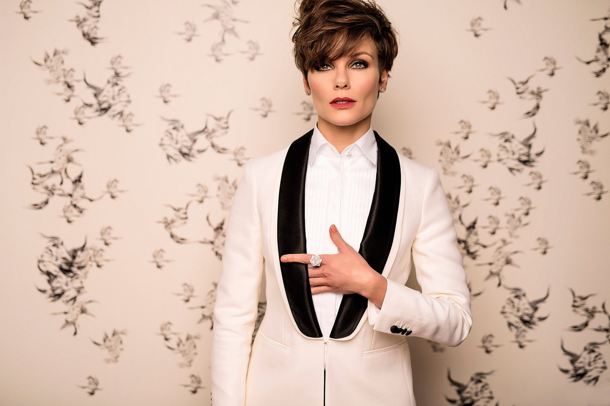
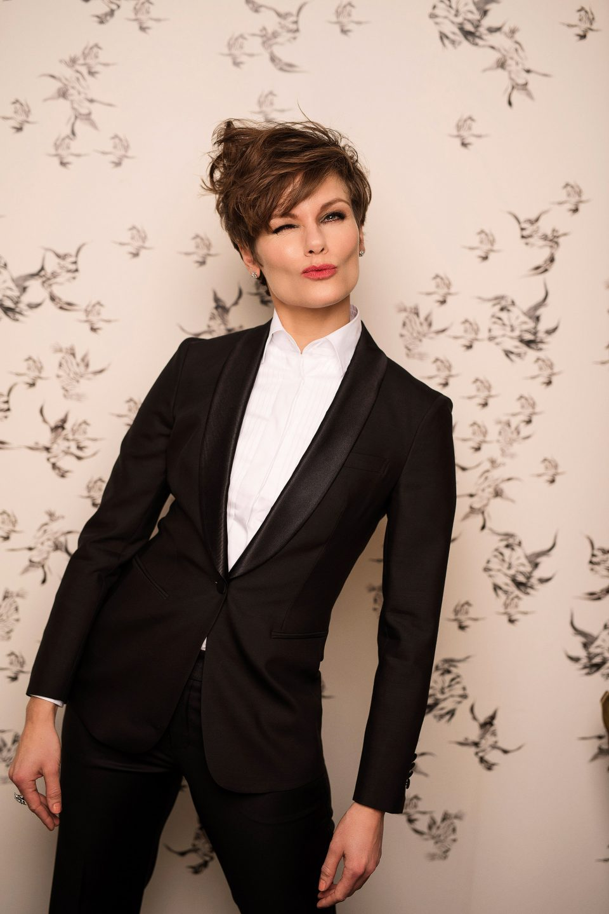
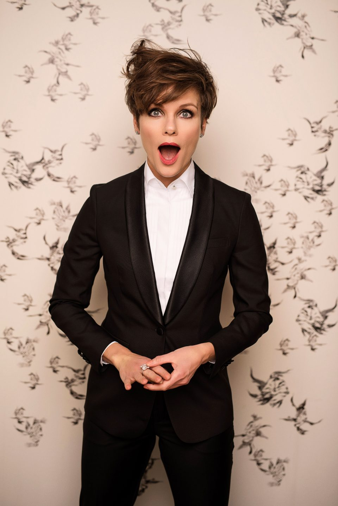

Angela
Schijf

Angela Schijf, a leading Dutch actress. Love's photoshoots as long she can play a role. Leave that to her.
At the magnificent Villa Nicola Amsterdam we created this Talkies Magazine Coverstory.
- Styling Dayenne Bekker
- Photography Otto van den Toorn
- Make-Up Fanny Kuipers
- Hair Hedwich Vigelandzoon
- Client Talkies Magazine

